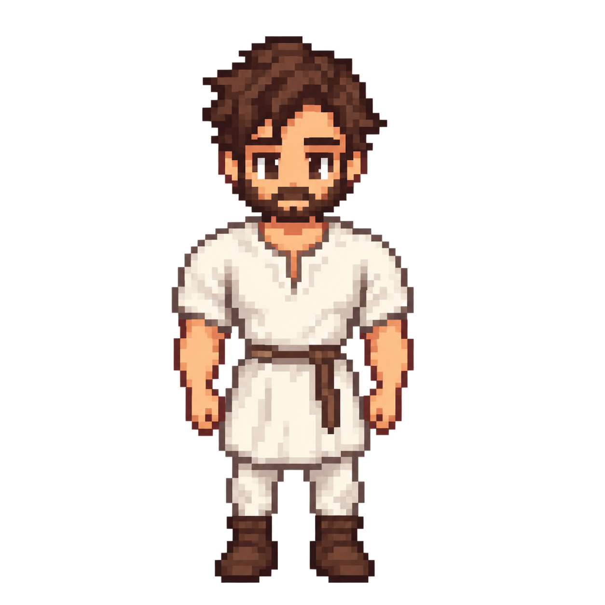
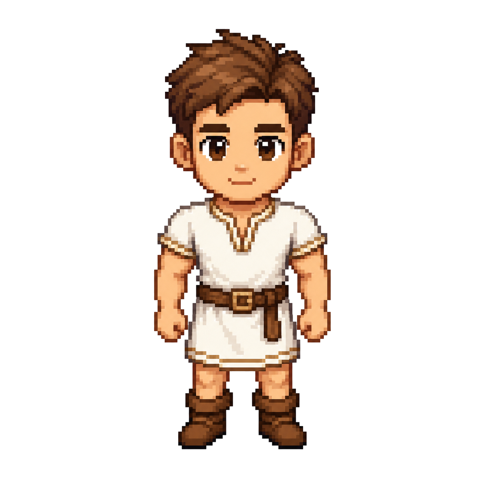

Idade atual: Adulto Homem (teste só no seu boneco)



Este painel é o script que você pediu: a cada geração eu te mando 2 opções de bonequinho de MAPA (estilo Stardew no mapa, com detalhes) + 1 retrato realista (estilo conversa). Você escolhe:


🔁 Fluxo que você pediu: bonequinho de MAPA (chibi Stardew, pé no chão, 4 direções) + imagem “real” de CONVERSA (rosto/pescoço detalhado, mais realista, tipo primeira referência). Vamos calibrar idade por idade: bebê → criança → teen → adulto → velho. Começando pelo seu boneco adulto.